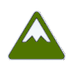
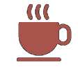
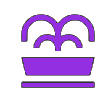
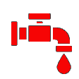
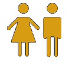
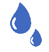

La carte indique les ascensions , les cafés  et les points d'eau (fontaine , robinet , toilettes , autre ).
Vous pouvez afficher ou masquer les icônes de chaque catégorie en cliquant sur les boutons (en haut à droite).
Le point bleu indique votre position actuelle (cela peut ne pas fonctionner correctement en intérieur).
Cliquez sur l'icône d'une ascension pour voir son altitude et, pour certaines ascensions, son profil (nouvelle fenêtre).
[2/2]
Cliquez sur l'icône d'un café pour voir son nom et son emplacement. Vous pouvez ensuite cliquer pour accéder à des informations supplémentaires détenues par Google, notamment ses horaires d'ouverture (nouvelle fenêtre).
Cliquez sur l'icône d'un point d'eau pour voir son type (cela devrait déjà être visible sur l'icône). Avertissement : ces informations sont extraites d'OpenStreetMap et n'ont pas été vérifiées par mes soins. Des erreurs et omissions peuvent survenir : points d'eau non potables ou ne fonctionnant plus, toilettes inaccessibles, etc. Vous utilisez ces informations à vos propres risques.
L'application est une page Web, vous pouvez donc l'ajouter à vos favoris ou l'ajouter à l'écran d'accueil de votre téléphone.